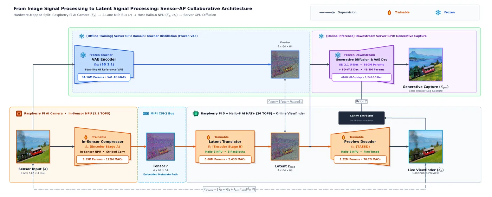
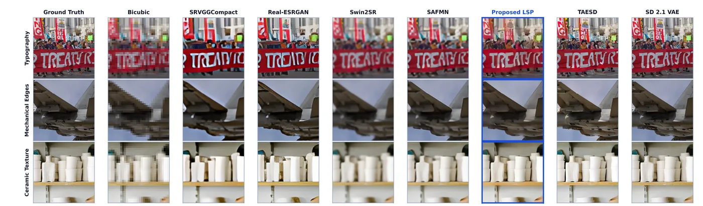
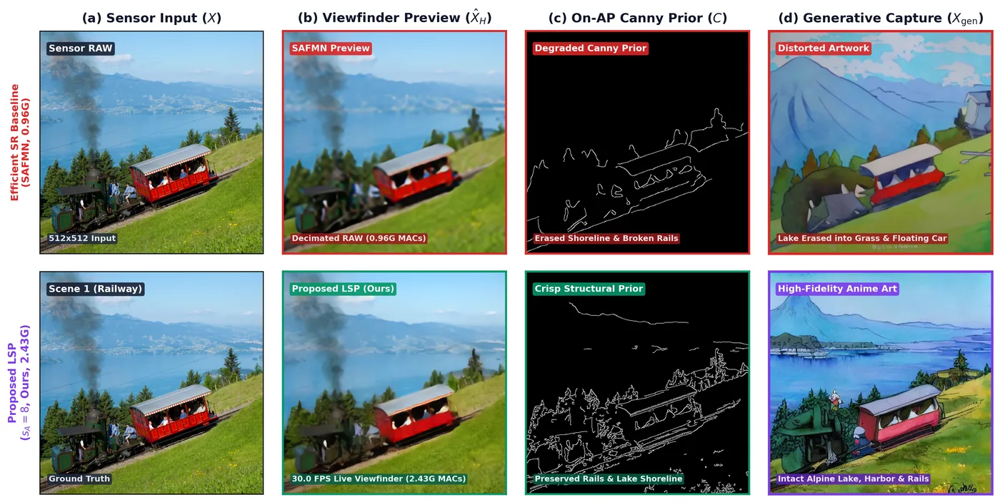

Physical inter-chip communication presents a fundamental bottleneck in deploying neural Image Signal Processing (ISP) and generative vision models on edge devices. Transmitting uncompressed sensor frames across camera serial buses incurs severe driver serialization and memory contention, bottlenecking throughput regardless of AP compute capacity. We propose transitioning edge cameras from classical Image Signal Processing (ISP) to Latent Signal Processing (LSP) via a Sensor-AP collaborative inference framework powered by asymmetric split-encoder latent distillation. We bifurcate the neural encoder across the sensor-AP boundary: an ultra-lightweight in-sensor Compressor (Stage A) collapses raw frames into a compact intermediate feature tensor ($48\times$ bus payload reduction), which an on-AP Latent Translator (Stage B) maps directly onto the canonical $64\times 64\times 4$ latent manifold. Standardizing sensing on this public latent representation allows a single hardware-mapped pipeline to concurrently power two disparate downstream applications from the same resident latent: continuous real-time viewfinder preview ($30.0\text{ FPS}$) via a compact fine-tuned decoder, and zero-shutter-lag (ZSL) generative capture via off-the-shelf foundation diffusion models without secondary raw acquisition or encoder re-execution. Physical edge experiments coupling the Raspberry Pi AI Camera and a Hailo-8 NPU with Raspberry Pi 5 confirm that our LSP architecture enables real-time generative imaging.
Computational imaging is rapidly shifting from hand-crafted ISPs to end-to-end neural models [1], [2] and latent diffusion models (LDMs) [3]–[5]. Concurrently, edge cameras are evolving into heterogeneous multi-processor systems, combining tightly constrained in-sensor NPUs [6] with AP accelerators via physical serial buses (e.g., MIPI CSI-2). While collaborative split inference [7], [8], learned neural compression [9], [10], and on-device diffusion [11], [12] partition workloads across compute boundaries, deploying neural imaging on edge devices is severely bottlenecked by inter-chip communication and data ingestion: transmitting uncompressed camera frames across physical chip boundaries imposes heavy driver serialization and bus contention ($52.91\text{ ms}$ for $3,072\text{ KB}$ FP32 frames on our prototype), throttling throughput to $14.9\text{ FPS}$ and starving AP accelerators.
We resolve this bottleneck by introducing Latent Signal Processing (LSP), an asymmetric split-encoder latent distillation framework that transitions edge sensing from monolithic pixel-domain ISPs to Sensor-AP collaborative inference. Our contributions are:

In heterogeneous edge cameras, sensor observations traverse a physical serial bus (e.g., MIPI CSI-2) to reach the host AP, making end-to-end turnaround a function of in-sensor acquisition, serial bus transmission, and AP inference. In smart image sensors such as the Sony IMX500 (Raspberry Pi AI Camera), on-sensor NPU inference results route to the AP via the camera's embedded metadata path during frame blanking intervals. In our experimental setup, we leverage this metadata path as the inter-chip communication channel for transmitting intermediate feature tensors. When transferring uncompressed raw frames, driver serialization, DMA buffer allocation, and memory contention impose severe bus latency ($52.91\text{ ms}$ out of a total $57.21\text{ ms}$ turnaround for $3,072\text{ KB}$ FP32 frames on our physical testbed). Accounting for more than $92\%$ of end-to-end pipeline latency, bus serialization caps throughput to $14.9\text{ frames per second}$ and starves AP accelerators. Expanding AP compute capacity cannot resolve bus starvation; real-time generative imaging fundamentally requires in-sensor compression before traversing the serial interface.
As illustrated in the deep learning network topology in Fig. 1, to eliminate bus saturation, the encoder $E(X)$ is factored into $E = E_B \circ E_A$:
where $X \in \mathbb{R}^{H \times W \times 3}$ is the raw RGB image and $s_A \in \{2, 4, 8\}$ is the sensor spatial stride (hereafter denoted SA2, SA4, and SA8 for brevity).
We distill $E_A$ and $E_B$ against the frozen Stable Diffusion 2.1 VAE encoder ($E_{\text{SD}}$) [3] scaled by $\alpha = 0.18215$ to enforce unit variance: $z_{\text{teacher}} = \alpha \cdot E_{\text{SD}}(X) \in \mathbb{R}^{64 \times 64 \times 4}$.
The sub-encoders $E_A$ and $E_B$ are optimized jointly end-to-end via the latent distillation objective:
Backpropagation updates the Latent Translator and propagates gradients through intermediate tensor $r$ during offline training to update the in-sensor Compressor. Concurrently, preview decoder $\mathcal{D}_{\text{ft}}$ is fine-tuned independently on real images via:
where $\mathcal{L}_{\text{perc}}$ is LPIPS loss ($\lambda_{\text{perc}}=0.5$). When reconstructing from ground-truth teacher latents $z_{\text{teacher}}$, standalone preview decoder $\mathcal{D}_{\text{ft}}$ achieves high fidelity ($24.2\text{ dB}$ PSNR, within $0.6\text{ dB}$ of the $49.5\text{M}$ SD-VAE ceiling), establishing the upper-bound fidelity of the preview path while preserving latent compatibility with frozen downstream diffusion models.
To avoid driver buffering jitter and memory contention, edge camera systems execute deterministically in sequential (serial) photon-to-display loops across in-sensor compression, MIPI bus transmission, AP latent translation, and preview decoding ($\mathcal{D}_{\text{ft}}$). Sustaining non-blocking preview display at $30.0\text{ frames per second}$ without frame drops or driver FIFO queue overflows requires completing this entire serial sequence within the strict $33.33\text{ ms}$ per-frame deadline. As demonstrated in our physical experiments (Section 4), contracting the intermediate bus payload satisfies this real-time budget by eliminating DMA serialization overhead.
| Config | Stage A (Sensor) | Bus Payload | Bus Latency | Stage B (Hailo) | Decoder (Hailo) | Serial Latency | System FPS |
|---|---|---|---|---|---|---|---|
| Uncompressed baseline | — | 3,072 KB | 52.91 ms | — | — | 52.91 ms | 14.9 FPS |
| SA2 ($s_A=2$) | 0.61 ms | 1,024 KB | 17.63 ms | 15.20 ms | 16.44 ms | 49.88 ms | 15.2 FPS |
| SA4 ($s_A=4$) | 1.75 ms | 256 KB | 4.41 ms | 3.72 ms | 16.44 ms | 26.32 ms | 28.5 FPS |
| SA8 ($s_A=8$) | 2.59 ms | 64 KB | 2.90 ms | 0.97 ms | 16.44 ms | 22.90 ms | 30.0 FPS |
Distilling sensor observations onto a canonical latent manifold ($z \in \mathbb{R}^{64 \times 64 \times 4}$) decouples edge sensing from downstream consumer decoders. Rather than binding the physical sensor to a proprietary neural ISP, our proposed LSP architecture maps raw observations directly onto the public Stable Diffusion 2.1 latent space ($\alpha = 0.18215$). This standardization establishes cross-decoder interchangeability: the identical predicted latent stream $z_{\text{pred}}$ concurrently drives heterogeneous decoders tailored for radically disparate compute, latency, and fidelity regimes without sensor re-reading or bus re-transmission.
Edge Preview Viewfinder ($30.0\text{ FPS}$ via $\mathcal{D}_{\text{ft}}$): Off-the-shelf tiny decoders such as TAESD [13] were originally trained primarily on synthetic diffusion samples rather than real photographic captures. By fine-tuning the compact $1.22\text{M}$-parameter decoder ($\mathcal{D}_{\text{ft}}$) directly on real photograph latents aligned with the canonical SD 2.1 manifold, standalone decoder fidelity reaches $24.2\text{ dB}$ PSNR—closely approaching the full $49.5\text{M}$ SD-VAE decoder ceiling ($24.8\text{ dB}$) within a narrow $0.6\text{ dB}$ margin. Deployed on the AP accelerator ($16.44\text{ ms}$ latency), $\mathcal{D}_{\text{ft}}$ delivers continuous live preview at $30.0\text{ FPS}$, saturating the physical camera sensor ceiling.
Foundation Generative Capture (Zero Shutter Lag via SD 2.1): When high-fidelity capture is triggered, resident latent $z_{\text{pred}}$ is consumed directly by a frozen SD 2.1 U-Net and full VAE decoder (conditioned on structural priors such as Canny edges extracted from preview $\mathcal{D}_{\text{ft}}(z_{\text{pred}})$) [14]. Because generative capture does not require continuous frame rates, $z_{\text{pred}}$ and edge prior $C$ are dispatched downstream to a server/workstation GPU with zero secondary exposure, raw re-transmission, or encoder re-execution. This guarantees true Zero Shutter Lag (ZSL) generative capture without inter-chip serial overhead.

The physical prototype comprises a commercial in-sensor NPU camera module (Raspberry Pi AI Camera with $3.1\text{ TOPS}$ in-sensor NPU executing compiled .rpk firmware) interfaced via 2-lane MIPI CSI-2 to a Raspberry Pi 5 ($2.4\text{ GHz}$ Cortex-A76). The AP is equipped with a Hailo-8 AI accelerator ($26\text{ TOPS}$ INT8 NPU running compiled .hef binaries via HailoRT 4.18) via PCIe Gen2/3 HAT+. Intermediate feature tensor $r = E_A(X)$ is routed through the camera's embedded metadata path. For the uncompressed baseline, transferring FP32 raw frames requires $3,072\text{ KB}$ ($52.91\text{ ms}$ bus latency). Under SA8 ($s_A=8$), bus payload contracts to $64\text{ KB}$ ($T_{\text{bus}} = 2.90\text{ ms}$), an exact $48.0\times$ reduction.
We evaluate on the canonical DIV2K benchmark dataset [15] ($800$ train, $100$ held-out val images). Reconstruction fidelity is measured using PSNR [dB] and LPIPS (AlexNet backbone) across full-scene frames.
Table 1 details component latencies, bus serialization overhead, and frame rates under serial photon-to-display execution on Raspberry Pi 5. Under SA8 ($s_A=8$), Stage A ($2.59\text{ ms}$), bus transfer ($2.90\text{ ms}$), Stage B ($0.97\text{ ms}$), and preview decoding ($16.44\text{ ms}$) yield a total serial latency of $\mathbf{22.90\text{ ms}}$, comfortably within the $33.33\text{ ms}$ frame budget to sustain $\mathbf{30.0\text{ FPS}}$ on live camera hardware (saturating the physical sensor ceiling). In contrast, moderate compression (SA4) incurs a $256\text{ KB}$ payload ($4.41\text{ ms}$ bus latency, $26.32\text{ ms}$ serial latency), sustaining $\mathbf{28.5\text{ FPS}}$. The uncompressed baseline drops to $\mathbf{14.9\text{ FPS}}$ due to severe bus serialization ($52.91\text{ ms}$).
Table 2 presents quantitative evaluation across partition configurations on DIV2K ($100$ held-out val images, mean $\pm$ std), while Fig. 2 evaluates the physical limits of reconstructing decimated raw pixels against conventional Low-Resolution Input + Super-Resolution (Low-Res + SR) baselines across models (columns) and scenes (rows):
| Configuration | Stage A (Sensor) | Bus Payload | Stage B (AP) | Decoder | LPIPS ↓ (mean±std) | PSNR ↑ (mean±std) |
|---|---|---|---|---|---|---|
| Monolithic SD 2.1 VAE | — | 3,072 KB | 541.1 G (34.16M) | 1,240.1 G (49.49M) | 0.0759 ± 0.0360 | 25.12 ± 3.25 dB |
| Monolithic TAESD [13] | — | 3,072 KB | 2.64 G (1.13M) | 70.7 G (1.22M) | 0.1395 ± 0.0690 | 22.42 ± 2.43 dB |
| Low-Res Bicubic ($s_A=8$) | — | 48 KB | — | 0 G (0M) | 0.6396 ± 0.1371 | 21.97 ± 2.70 dB |
| Low-Res + SRVGGCompact ($s_A=8$) [17] | — | 48 KB | — | 4.95 G (1.21M) | 0.5036 ± 0.1171 | 20.98 ± 2.52 dB |
| Low-Res + Real-ESRGAN ($s_A=8$) [17] | — | 48 KB | — | 73.43 G (16.70M) | 0.4257 ± 0.1056 | 20.69 ± 2.66 dB |
| Low-Res + Swin2SR ($s_A=8$) [18] | — | 48 KB | — | 51.12 G (12.24M) | 0.4473 ± 0.1272 | 23.53 ± 3.08 dB |
| Low-Res + SAFMN ($s_A=8$) [16] | — | 48 KB | — | 0.96 G (0.24M) | 0.4966 ± 0.1325 | 23.17 ± 3.00 dB |
| SA8 ($s_A=8$, Ours) | 122 M (9.59K) | 64 KB | 2.43 G (0.60M) | 70.7 G (1.22M) | 0.2926 ± 0.0777 | 22.90 ± 2.58 dB |
| SA4 ($s_A=4$, Ours) | 67 M (9.1K) | 256 KB | 12.4 G (1.25M) | 70.7 G (1.22M) | 0.2134 ± 0.0676 | 23.34 ± 2.76 dB |
| SA2 ($s_A=2$, Ours) | 13 M (2.4K) | 1,024 KB | 52.2 G (1.91M) | 70.7 G (1.22M) | 0.1599 ± 0.0523 | 23.14 ± 2.78 dB |
Streaming Stability: In edge camera systems, serial bus contention directly degrades frame delivery stability. When transferring uncompressed raw frames ($3,072\text{ KB}$), bus contention and driver DMA buffer queuing cause high frame arrival variance ($52.91 \pm 8.7\text{ ms}$), throttling throughput to $14.9\text{ FPS}$ and inducing visible preview stutter. In contrast, proposed SA8 contracts bus payload to $64\text{ KB}$ ($2.90\text{ ms}$ DMA latency). By eliminating buffer queue congestion on our physical Raspberry Pi 5 testbed, inter-frame arrival intervals stabilize to $33.3 \pm 0.6\text{ ms}$, ensuring glitch-free live preview synchronized at the physical $30.0\text{ FPS}$ camera sensor ceiling.
Because predicted latent $z_{\text{pred}}$ strictly populates the canonical SD 2.1 manifold, foundation models attach seamlessly without retraining. Since generative capture does not require continuous frame rates, resident latent $z_{\text{pred}}$ directly initializes downstream diffusion models conditioned on preview Canny edges ($C$, Fig. 3) dispatched downstream to the workstation GPU with zero raw-frame bus transmission.
Transmitting decimated pixels under the strongest efficient SR model (SAFMN [16]) yields fragmented Canny contours (Fig. 3(c), top) where track rails are severed and shoreline boundaries vanish, causing ControlNet diffusion to completely erase the alpine lake into a grassy meadow and synthesize a floating train carriage (Fig. 3(d), top). In contrast, our LSP architecture preserves critical generative subbands via teacher distillation ($E_{\text{SD}}$), reconstructing continuous structural contours and enabling faithful generative synthesis with intact alpine scenery and grounded railway tracks with zero raw re-transmission.

We established the paradigm shift from Image Signal Processing (ISP) to Latent Signal Processing (LSP) via sensor-AP collaborative inference. Distilling raw sensor observations directly onto the canonical Stable Diffusion latent manifold contracts MIPI bus payload by up to $48\times$ ($64\text{ KB}$), achieving $22.90\text{ ms}$ serial latency and saturating the physical $30.0\text{ FPS}$ camera ceiling while eliminating perceptual distortion and hallucinations inherent to aggressive raw decimation. By decoupling edge sensing from downstream decoders, the unified latent representation enables simultaneous real-time viewfinder streaming and zero-shutter-lag foundation generative capture without raw re-transmission. Future work includes extending latent signal processing to synchronized multi-camera arrays and exploring temporal latent compression for continuous edge video generation.